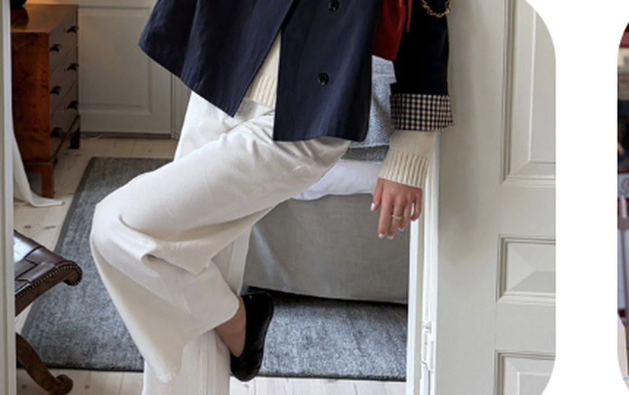
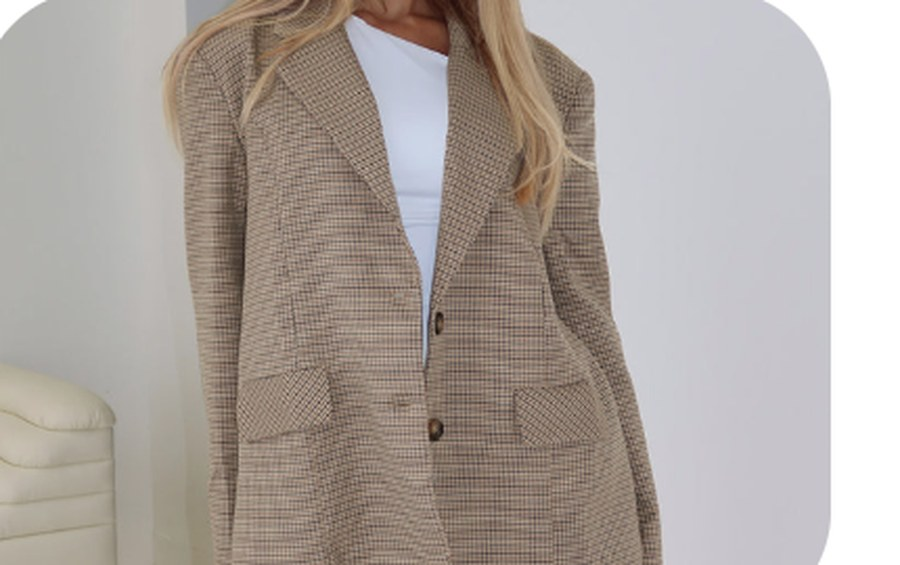

Portfolio
Allison Pearlman
Aspiring Creative Director
I care about what looks good, and why people respond to it, in a store, on a display, in a digital edit, and on a feed.
Selected work
01 · Global Career Accelerator
Nöz
Digital brand experience · Positioning, site structure & scroll journey
For GCA, I built Nöz as an end-to-end digital brand experience: positioning, site structure, and the scroll journey shoppers take through the story.
I treated the site like a retail floor online: clear hierarchy, intentional pacing, and visuals that pull you through.
02 · WantLocker
Campus Ambassador
Digital edits & curation · @Closetaddkit
Seasonal and occasion edits with naming, assortment, and cover direction, so each collection feels like a point of view, not a random dump of SKUs.
~25 collections 50+ items each
Featured edits



03 · Campus Closet
Visual Merchandising & Events
Visual Merchandising and Event Coordinator Intern · UA Retail Lab / Terry J. Lundgren Center · Aug 2026–Present
Assortment and floor for Campus Closet’s professional-wear boutique. Deciding what earns a hanger and placing every piece so the store reads clearly.
Weekly sticker system: a new hanger color each week so we can see what’s moving, what’s sitting, and what should transfer to the other location.
First campus event: October 22, 2026


04 · Victoria’s Secret
Wear Test
Campus event · Social reel
Campus event social reel for the Victoria’s Secret Wear Test: welcome moment, product and activation details, student energy, and a nod to early-career opportunities at the brand.
Built for social pacing; muted here so the visuals lead.
About
Allison Pearlman
I’m a Retailing and Consumer Science major at the University of Arizona, graduating early in May 2027. I want to work in creative direction inside real retail, where taste, product, and how people move through a space or a feed all matter.
- Visual Merchandising & Event Coordinator Intern Campus Closet / UA Retail Lab Aug 2026–Present
- Campus Ambassador WantLocker 2026–2027
- Digital Marketing Global Career Accelerator May–Aug 2026
- Campus Marketing Intern Hang Loose Hut Jan–Jul 2025
Contact
Let’s connect
- Email allisonrpearlman@gmail.com
- LinkedIn linkedin.com/in/allison-pearlman
- WantLocker @Closetaddkit